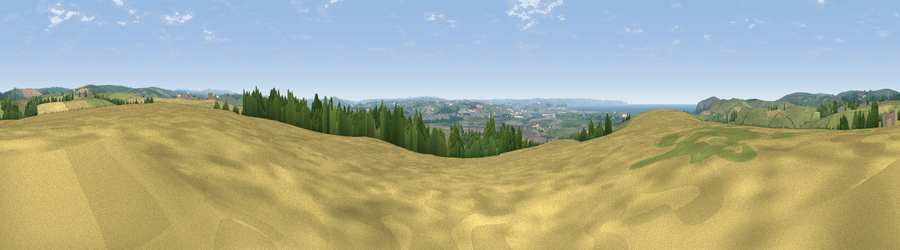

Viewpoint near Heanton Punchardon
#4921 in England · top 16% of its area beats it · near Heanton Punchardon · access?Where it is
The exact computed spot (SS 50525 36975). Click the marker for map links.
Public access: no public right of way or access land is recorded at this exact spot — it may be on private land. Computed from Natural England's CRoW access layer and OpenStreetMap rights of way — not the legal definitive map. Always verify locally.
The view, rendered

A 360° render of this exact spot computed from the terrain model, tree cover and land cover — summer colours, afternoon light, calibrated against photographs of famous viewpoints. Real trees, hedges and buildings will differ in detail.
The panorama
Grey silhouette: terrain skyline in each direction (720 bearings, Earth curvature and refraction included). Dashed green: skyline with trees (+15 m) and buildings (+8 m) as obstacles. Blue strip: how far the ground is visible on each bearing.
Where the view opens
Wedge length = distance to the farthest visible ground on that bearing (vegetation-aware). Rings at 10, 25 and 50 km.
What fills the view
42% grassland · 41% cropland · 9% woodland · 5% water · 3% built-up ·
Angular shares of the visible panorama (visual magnitude), not map area. Landscape diversity 0.53 (0–1 Shannon).
Key numbers
More beautiful places nearby
The staircase of upgrades: each row has a higher view potential than everything closer. Driving times are estimates from straight-line distance, calibrated against real road routing — check an actual route before setting out.
| Place | Direction | Drive | Score |
|---|---|---|---|
| Viewpoint near Braunton | WNW · 3 km | ~7 min | 76.1 |
| Viewpoint near Saunton | WNW · 5 km | ~10 min | 76.6 |
| Viewpoint near Croyde | WNW · 6 km | ~12 min | 83.7 |
| Viewpoint near Woolacombe | NW · 7 km | ~14 min | 84.7 |
| Viewpoint near Combe Martin | NE · 14 km | ~25 min | 86.9 |
| Viewpoint near Combe Martin | NE · 14 km | ~26 min | 88.9 |
| Holdstone Hill | NE · 16 km | ~28 min | 90.2 |
| The Knoll | ESE · 114 km | ~138 min | 91.0 |
51.11252, -4.13679 · source: screening · position refined by local search. Computed location — check access rights before visiting.